1960年代 ～原点～
1966年（丙午）8月19日、群馬県伊勢崎市で父・孝夫と母・太恵の長男として生まれる。
父は6人兄弟の4男（5番目）。農業科学を専攻した国立大理系肌の公務員で、畑づくりや園芸、絵画に写真と、自然や表現好きな趣味人。また、道場通いを日課としていた五段の弓道家でもあり、豊かな感性と凛とした静観が同居する人物。母（旧姓・橋田）は7人兄弟長女（1番目）。高校時代は全日本庭球選手で、書道師範の顔も持つ。家業である縫製工場（元は伊勢崎銘仙の反物卸）を手伝っていた。どちらの家系も地元に深く根を張り、辿れる限りでも平安時代の東国武士に繋がるようなので、血統書付きの大和朝廷下の騎馬隊グンマー族（笑）。そんな文武両道の両親の元で、2歳上の姉と共に育った。姉は23歳で豪州のターンブル家へ嫁ぎ、2人の娘に恵まれ、現在は夫とシドニーで生活を送っている。


核家族化が進んだ現代とは対照的に、両親共に兄弟が多く、地元をはじめ横浜や広島など、ことあるごとに親戚が集まる賑やかなファミリーだった。中でも歳が近かった母方の従兄弟たちとは、広島、東京、伊勢崎とお互いの街を往来して良く遊んだ。その名残で、今でも広島弁はそれなりに話せる（自称ｗ）。


こうした環境の中で、市内の西園保育園、南幼稚園で伸びやかな幼少期を過ごした。


1970年代 ～スポーツ少年から青春時代へ～


伊勢崎市立南小学校時代は、とにかく体を動かすことが好きだった。
野球、水泳、スキー、市内スキークラブ、サッカースポーツ少年団…。左ウイングとして副キャプテンも務めた。
市立第一中学校では、当初サッカー部へ入部するつもりだった。しかし、小学校時代の憧れの先輩たちが"ビーバップ"スタイルへ変貌し、スパイクのかかとを踏みつぶしてプレーする姿を見て断念。
母の影響もあり軟式庭球部へ転向。中学3年の中体連では市内3位となり、県大会にも出場した。芸術面では、マンガに始まり絵を描くことが得意で、書道は教室に習いながら初段を取得した。


1980年代 ～高校‐大学、DJ音楽、そして人生の視野が広がる～


高校は県内の男子校（前橋高校）へ進学。しかし自由奔放だった自分には秀才揃いの校風が少々窮屈で、気がつけば自分自身が"ビーバップ化"してしまう。勉強は二の次になったものの、応援部と軟式庭球部で青春を満喫。高校3年では群馬大学杯3位入賞を果たした。
大学への現役進学は叶わず、駿台予備校大宮校で１年間の浪人時代を過ごす。そこから週一でお茶の水本校に通った帰りに、渋谷の「La Scala」でディスコDJパフォーマンスに魅了され、後に人生を通じて続くレコードのDJ編集と収集趣味が始まった。
早稲田大学社会科学部へ合格した際、自宅からの通学を促されたが、独立願望の強さから、一般教養課程の2年間は中野区の風呂なしアパートで１人暮らしを始めた。近くの銭湯へ通い、時には背中いっぱいの刺青を入れた常連客に水がかかって怒鳴られるなど、今では笑い話になる経験も少なくなかった。
大学後半の2年間は、世田谷区東玉川へ移り住んだ。ゼミ（元野村證券の教授による日本経済の実証研究）には一応真面目に出席していたものの、キャンパスライフはアルバイトとサークル活動が中心だった。典型的な「高田馬場に通う学生」の枠にはまらず、日常生活の軸足はすっかり東横線から渋谷&日比谷線の沿線エリアへと移っていた。
長く働いたアークヒルズ全日空ホテルのバイト帰りには、首相官邸裏手（国会議事堂前駅）の「花の華ラーメン」に通い詰めた。あれから40年近くが経つ今も、あの味への思い入れは色褪せない。（※当時の店舗は現在「支那麺 はしご 赤坂店」となったため、今は南麻布店へ月に１回ほど通っている。少し味のニュアンスは違う……）
また、この頃のバイト先にはDJの達人である先輩がいた。やがて先輩の家に入り浸るようになり、DJテクニックを伝授してもらう傍ら、自身のレコード収集熱にも火がついた。


1990年代 ～金融の世界へ、そしてヨーロッパへ～
1990年4月、バブル景気の真っただ中、山一證券へ入社。
渋谷支店での5年間は個人営業の現場に身を置いた。当時470人いた総合職同期のうち、4分の3が全国の支店個人営業配属となったが、過酷な競争環境に加え、パワハラ・モラハラが横行する「使い捨て」の時代背景もあり、1年以内にその半数近くが退職していった。
入社1年目から日本のバブル崩壊が始り、世界も大きく揺れていた。イラクのクウェート侵攻に端を発する湾岸戦争。そして1991年8月19日、ゴルバチョフが軟禁されたソ連のクーデターである。この日の市場急落は「レッドマンデー」と称された。自分の誕生日がそのように呼ばれた微妙さはともかく、同年12月にはソ連が崩壊。日本のバブル崩壊と「失われた30年」は、こうした世界情勢の激変と歩みを同じくして始まっていった。


【留学生選抜】
1995年に大きな転機が訪れる。
社内の留学生選抜(応募者1,000名に対して合格枠はわずか9名)を突破した。
とりあえず人事部人材開発部へ配属となり、新入社員の研修クラスを受け持つ新人教育も担当した後に、いきなり海外赴任が決まった。行き先はオランダ・アムステルダム。
バブル崩壊後の証券界は不況の真っただ中。経費削減の波は容赦なく押し寄せ、留学生に選ばれた９名のうち、私を含む3名の支店の個人営業マンに甘い密月は許されなくなっていた。
会社がくれたのは「仕事を離れて学べる夢のチケット」ではなく、「現地で叩き上げられる日本株営業」のポジション。
かくして私の“海外留学”は、仕事をしながら通う現地の英会話スクール生へと見事にスライドしたのだった。


【オランダ・アムステルダム勤務】
オランダ生活の拠点は、職場のワールドトレードセンターに車で３０分ほどのアムステルフェーンに決め、いざ初めての海外勤務へ！……と意気込んだものの、日々の癒やしは「仕事終わりの英会話学校」の帰り道にあった。
ふらりと立ち寄ったアムステルダム市内中心の路地裏にある中古レコード店「Record Mania」で、学生時代からのDJ熱が大爆発してしまう。英語の勉強もそこそこに、レコード店の常連へと登りつめたが、貴重な給料や海外手当の多くは、掘り出し物の中古盤へと次々に姿を変えていった。
この時に掘り当てた80年代Soul・Funk・Discoの激レアコレクションは、今なお私の人生を彩る宝物となっている。


【ロンドンの金融街シティーへ】
次なる舞台はロンドン現地法人だった。引受部の日系法人担当として、日本企業の欧州市場における資金調達を後押しする。
さらに、日本株チームと連携して、上場企業と海外の機関投資家を結びつける「コーポレートアクセス（通称IR）」の支援にも深く携わっていった。
住まいは、ビートルズで有名なアビーロードの角を曲がった場所、セント・ジョーンズ・ウッド（通称センジョン）に構えた。独身で珍しくロンドン中心部の静かな北エリアに住んでいた理由はただ一つ。さらに北の地域（The North）に家族で住む多くの先輩方から頼まれる、週末ゴルフの運転手とプレーのお付き合いのためだった。

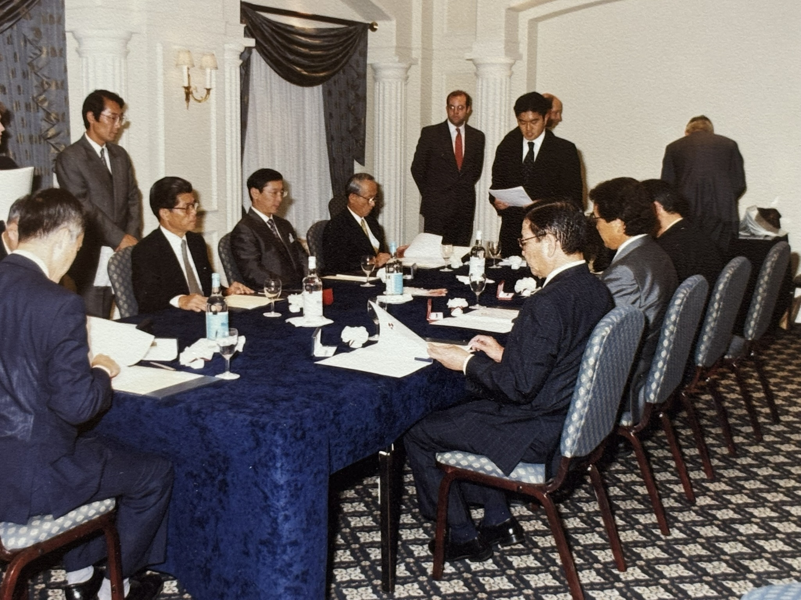


【山一證券自主廃業】
当時の橋本龍太郎内閣が掲げた「日本版金融ビッグバン」改革構想に端を発し、ロンドン勤務2年近くが経つ11月、当時４大証券と言われた中で４番目の業績だった山一は、1997年に自主廃業という歴史的出来事に直面した。
直前の決算では営業上の黒字(帳簿上..)で、大蔵省モニターの下で必要な融資の段取りもついていたにもかかわらず、一転して内閣からの命令で自主廃業を余儀なくされたのだと、後に聞かされた。上場企業から預かった特定金銭信託をはじめとする損失資産の、海外子会社への帳簿つけ替え(いわゆる"飛ばし")といった業界の悪しき慣行と、実質的な債務超過状態には、金融改革上、メスを入れざるを得なかったのだ。
いずれにしても単独での存続は既に厳しくなっていた。ロンドンで自主廃業ニュースが流れた11/21(金)の前日に、ＮＹからコンコルドでロンドンに飛んできた海外担当常務の出迎えを任された際、 提携を模索した外資系証券会社との破談の話は、ヒースロー空港からの移動の車内では耳にはしていた。
最後の融資の頼みの綱だった富士銀行(同じ芙蓉グループ)も、ロンドン常駐常務が山一ロンドンの会長室で同週半ばから終日こもりっきりだった。既に不穏な気配は感じていた。
日本時間の11月22日(土)未明に、山一自主廃業ニュースは世界で流れた。ロンドンでは丁度21日(金)の夕方仕事を終えて帰ろうとした頃だった。翌日土曜日は、日本の上場企業御一行様をヒースロー空港でお出迎えの予定があった。
社内では現地法人の会長と社長も寝耳に水だった。
東京の本社役員を夜中に起こして確認するも、ただ不機嫌がられる始末だったようで、事実確認には数時間を要していた。
しかし事実とわかるとロンドオフィス内で招集がかかり、ロンドン現地社員も含めて説明がなされた。
法務部責任者のマークフィニー氏は、「今から精算業務に移るので、会社のものには手を付けるな」と言っていた。貴重な絵画や、年代物ワインセラーもあったので、それらのことかな、と想像しながら聞いていた。
まだ日本は22日の朝が明けていないため、一般にはニュースは広まっていなかったが、同期の友人には電話をかけて知らせた。
そして翌1998年2月に帰国して、山一證券の本社国際部付けとなった。
帰国に際しては、全日空が全ての駐在員及び家族全員の帰国渡航の面倒を見てくれた。通常ＪＡＬを会社は利用していたが、事情下で前金払いを求められたところを、平時通りの後払いで助けて頂いたようだ。
それにしても創業101年の歴史もあっけなく終わるものだ。
伝統で守ってきた山一證券の主幹事企業には、松下電器産業（現・パナソニック）やキヤノンのほか、新日本製鐵や東急電鉄、小田急電鉄、日立製作所、日本郵船など日本の代表する会社が名を連ねていた。松下幸之助氏からの依頼を受けても譲渡を固辞していた伊勢神宮式年遷宮参拝の一番札の権利もあったが、今はどうなったのだろう。
翌年以降に控えていた大型上場案件の主幹事〔NTT移動体通信(ドコモ)、電通など〕も、結局は果たせず仕舞いだった。
会社更生法といういわゆる「倒産」とは異なり、自主廃業を選択した会社のお陰で、帰国費用が自前でなくて済んだことと、会社都合退職で手にした勤務8年分の退職金２０万円は小さな感謝ではあった。
しかし、この転機が新たな出会いを生む。

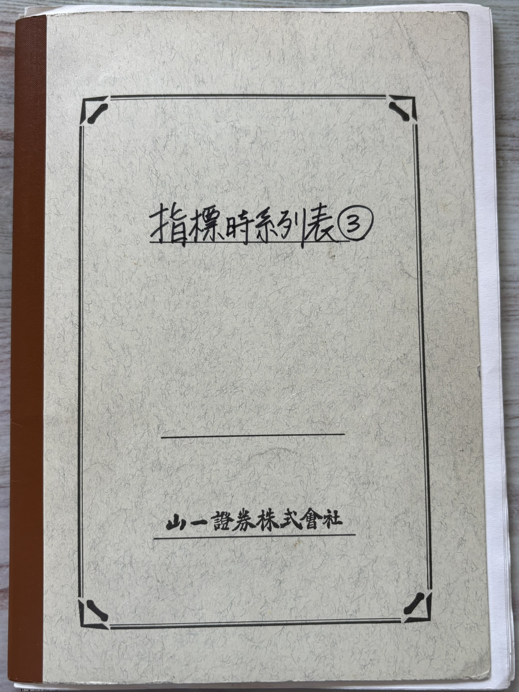
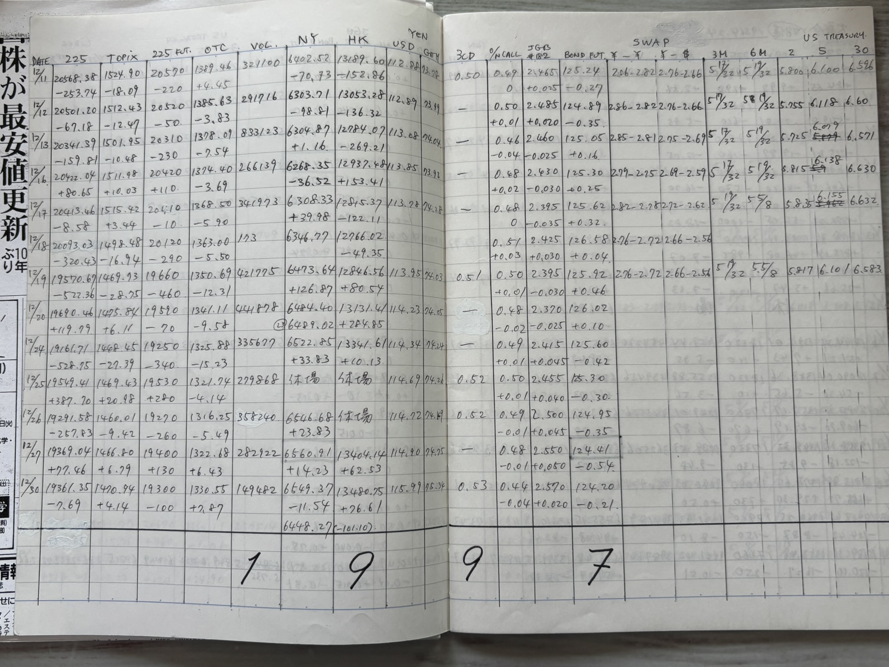
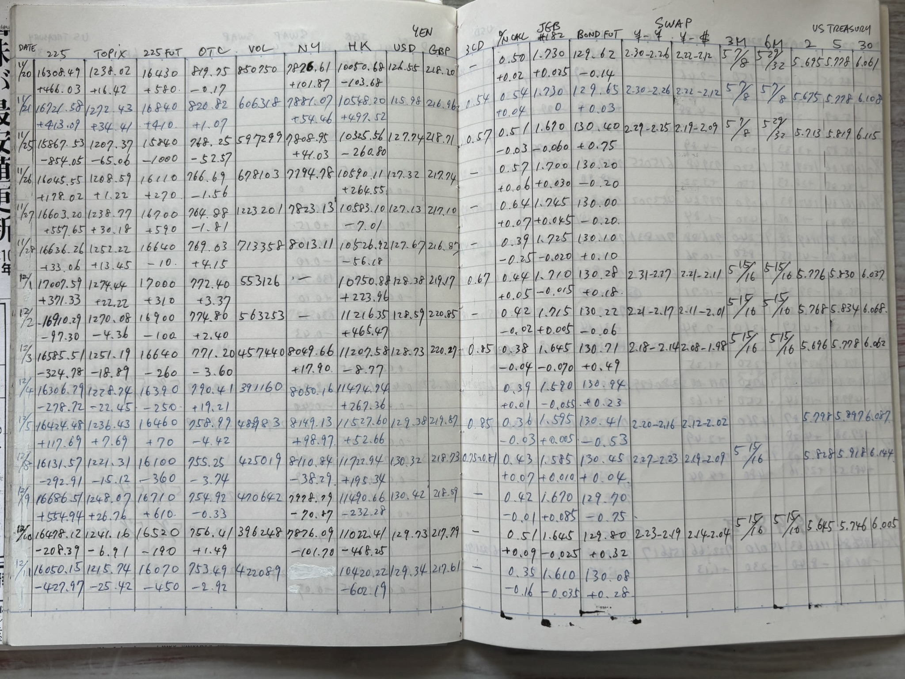

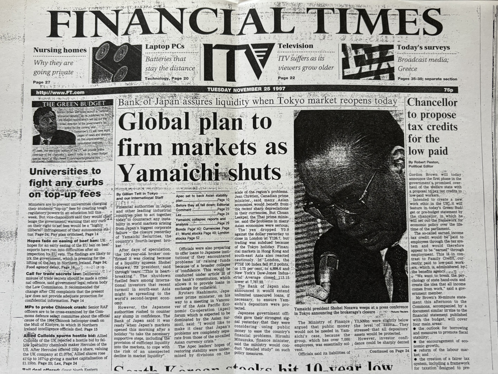

【ソニーへ入社】
１９９８年春にソニーの財務部に新設された資本市場課へ入社。杉並区永福町に住まいを構えて、品川の本社へ通勤した。課はせいぜい４～５名の小所帯だったが、当時の上司は後のソニー会長・吉田健一郎氏、係長は現社長CEOの十時裕樹氏だった。
翌1999年春には、出井伸之会長の肝煎りの極秘プロジェクト「マネックス」準備室に、志願兵として参画。この新会社立案者で、個人でソニーと共同出資した松本大氏（当時ゴールドマンサックス本社ゼネラルパートナーで現マネックスグループ会長）と彼の部下３名と、神田錦町竹橋安田ビルの一室で日本のインターネット証券黎明期に立ち会うこととなる。


2000年代 ～再びロンドンへ～
旗揚げしたマネックスでは、事業開発部と顧客サービス部を牽引した。創業者・松本大氏の知名度とITブームの爆発的な追い風を背に急成長を続け、営業開始からたった1年後の2000年8月には東証マザーズ上場を成し遂げる。
振り返れば、企業の「廃業・上場廃止」と「起業・新規上場」。ビジネスの陰と陽、その表裏一体と言える両輪のドラマを、身をもって経験することとなった。
2003年にドイツ証券東京支店へ転職。その年の７月に再びロンドン勤務となった。フランクフルトに本社を置く伝統ある商業銀行でありながら、英モルガン・グレンフェル買収を機に、ロンドンを拠点として世界資本市場で果敢にリスクを取る投資銀行部門が母体を支える軸となっていた。ここのグローバルマーケッツ部門で日本株営業部に身を置いた。
ここでは山一ロンドン時代に培ったノウハウが大いに役立った。日系証券の強みである「全方位外交」と「手厚い事業会社ケア」。そこに、必要な領域へ過剰なまでにフォーカスし、それ以外は潔く切り捨てる「外資系スタイル」を融合したハイブリッド型サービスを展開。日本を代表する上場企業の経営陣に帯同し、欧州や北米の有力機関投資家を巡るIRロードショー（コーポレートアクセス）を精力的にこなした。ロンドンオフィスの現場において、日本人社員一人という時期も長く続いたが、世界の金融市場の中心舞台で役割を担った。
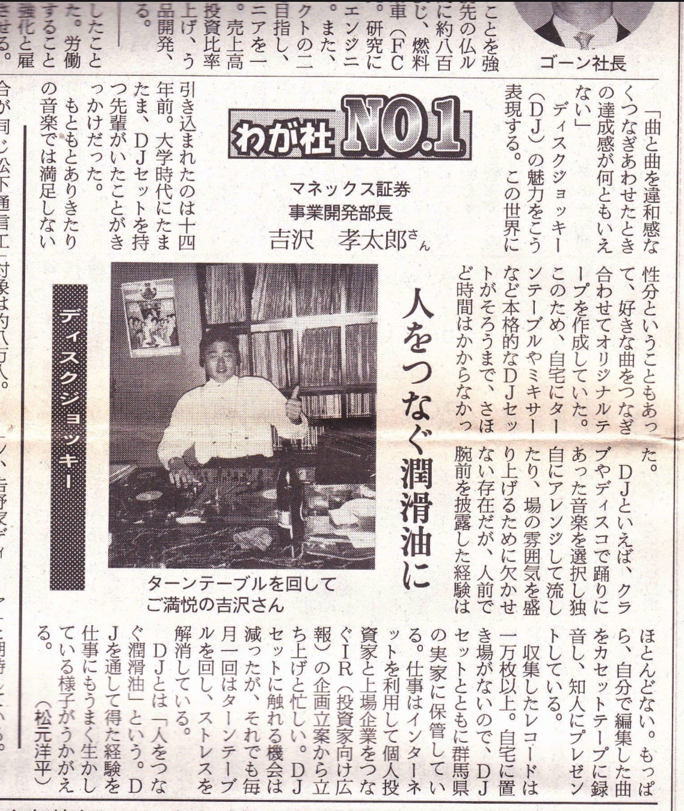
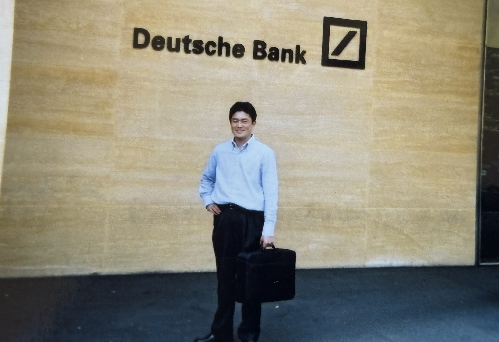
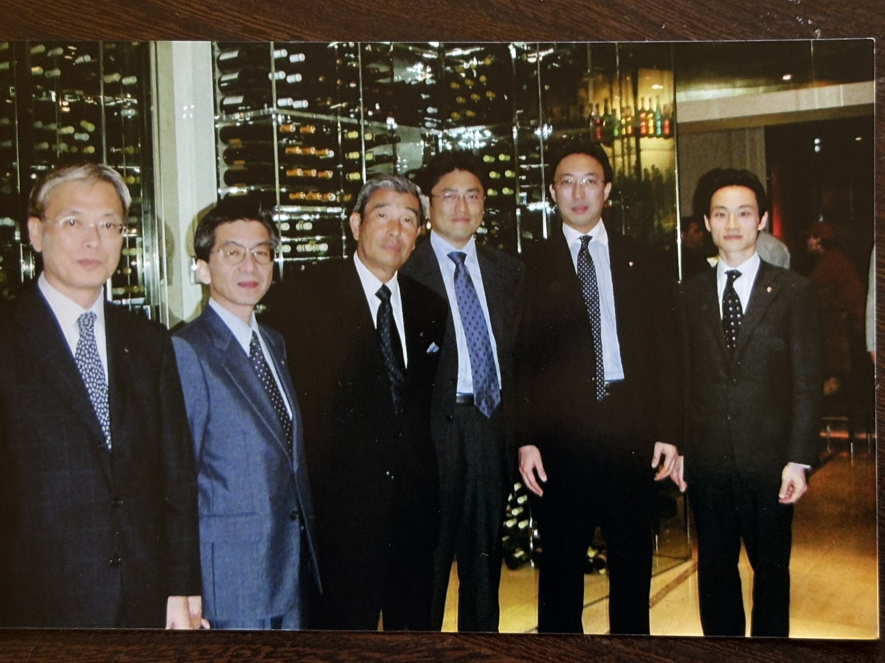


2010年代 ～仕事も人生も、大きな転機～
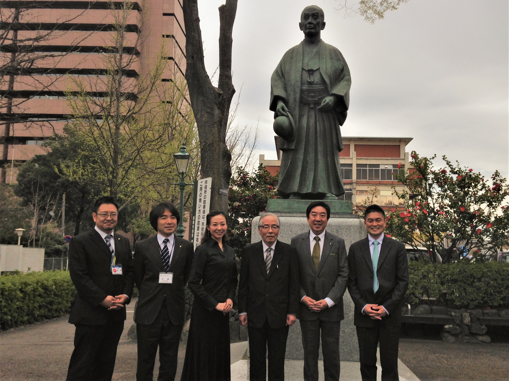


リーマンショックや東日本大震災、ギリシャショックなど、世界の金融不景気が続くなかの2013年、46歳で初婚を迎える。しかし直後、ドイツ銀行ロンドンの部門閉鎖により2度目の会社都合退職となった。
翌2014年にロンドンで長女真沙（Maasa）が誕生し、９月にはSMBC日興証券ロンドンでコーポレートアクセス部門責任者として再出発した。しかし、その翌年に離婚と退職を経験。人生最大の試練を迎える。
同年、ロンドンにて個人事業主としてMylion Advisory Global Limitedを設立し、新たな挑戦を始めた。
２年ほどが経過し、徐々にグローバル法律事務所ホーガン・ロヴェルズや、地元有力金融メディアのフィナンシャル・タイムズ（FT）などから業務委託の仕事を請け負うようになった。その後、FT社を買収した日本経済新聞社との縁にも恵まれ、同社のロンドン現地法人「日本経済新聞ヨーロッパ社」にて2019年まで業務に従事した。2018年には、FT社主催によるロンドン証券取引所でのESGセミナーの企画を立案。日系企業の役員やESGの専門家と主力投資家らを一堂に集めた200名規模のコンファレンスは、時代のテーマにも乗りメディアに取り上げて頂いた。その他在職中に印象的だったのは、 日本経済新聞ヨーロッパ社 のオフィス移転。テムズ川南岸のFTオフィス内事務所から、ロンドン・シティ地区にある歴史的建物「ブラッケン・ハウス（Bracken House）」へ、FTと共に移転を果たす。元々FTの本社だったその伝説的な歴史的建物へと戻ったFT社の人々が、感無量の様子を見せていた。
そんなビジネスライフの傍ら、殆ど何をしているかも知れぬ身分だった2016年に、知人の企画した渋谷シダックスアカデミーホールにおけるディナーショーに呼ばれ、 ソロリサイタリストだった元宝塚歌劇団花組男役・真丘奈央（岡松葉子）と出会う。
真丘奈央の母方（下村家）のルーツが、自分が高校時代を過ごした前橋市にあり、彼女が初代前橋市長の下村善太郎の真の玄孫であることを知り、当時の山本龍市長と彼女が対談する企画を前橋市役所へ持ち込む。その後前橋市と真丘奈央のご縁も深まり、文化交流企画やソロリサイタルイベントも実現した。
彼女との親交が深まる中で、ロンドンで毎年開催される人気イベント「ハイパーJAPAN」の主催者とのご縁にも恵まれました。これにより、2016年と2018年の2回、真丘奈央ソロステージが実現した。
そして2018年大晦日、岡松葉子と入籍。
人生の後半戦は、公私ともに新しいパートナーと歩み始めた。
運命とは実に不思議なもので、長年私を占ってくれていた故・長妻未峰さん（R.I.P.）は生前、「あなた方の先祖は昔、ご近所同士だったのよ」と語っていた。
実は後年、父の書庫で見つかった明治時代の「前橋市商業便覧」によって、その言葉が紛れもない事実だったと判明する。
当時、富岡製糸場から運ばれた糸は前橋で商品として紡がれ、横浜港を経て「Maibashi」ブランドの高級生糸として欧州へ輸出されていた。私の母方の先祖はその紡績を担う「交水社」の創立メンバーであり、妻・葉子の母方の先祖は生糸貿易で成功を収め、巨財を投じて前橋発展の基礎を築いた功労者——のちの初代前橋市長である。
便覧に添えられた当時の住宅地図を開くと、二軒は市内中心部の目抜き通りを挟んだ斜め向かいにしっかりと記されていた。地域の歴史を創り上げた先祖同士の浅からぬ縁を目の当たりにし、深く感動し、驚嘆するばかりだった。


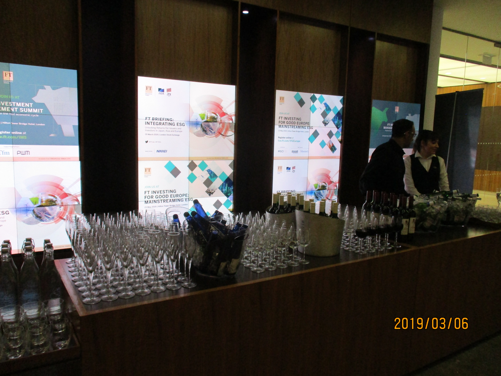

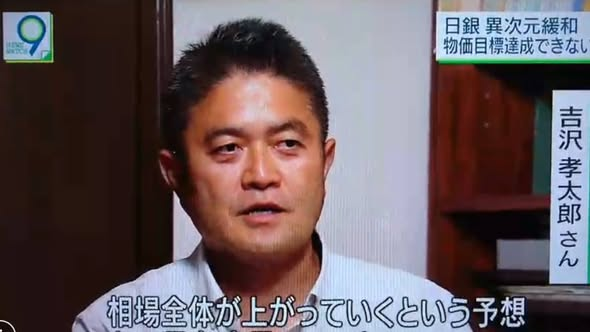
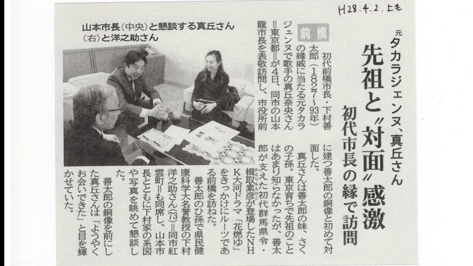
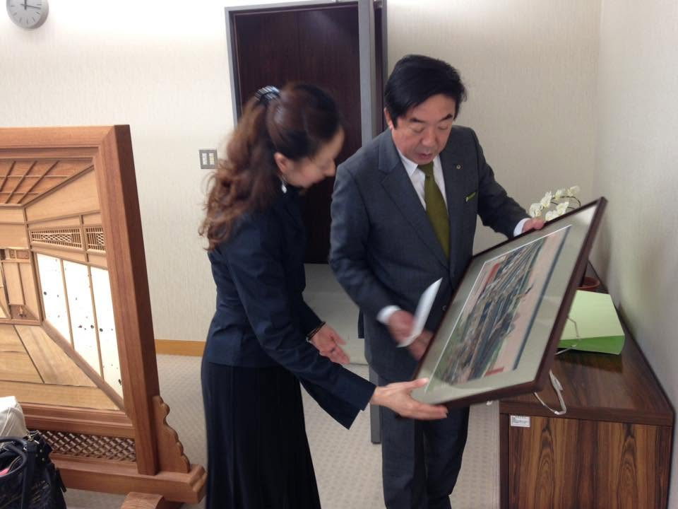
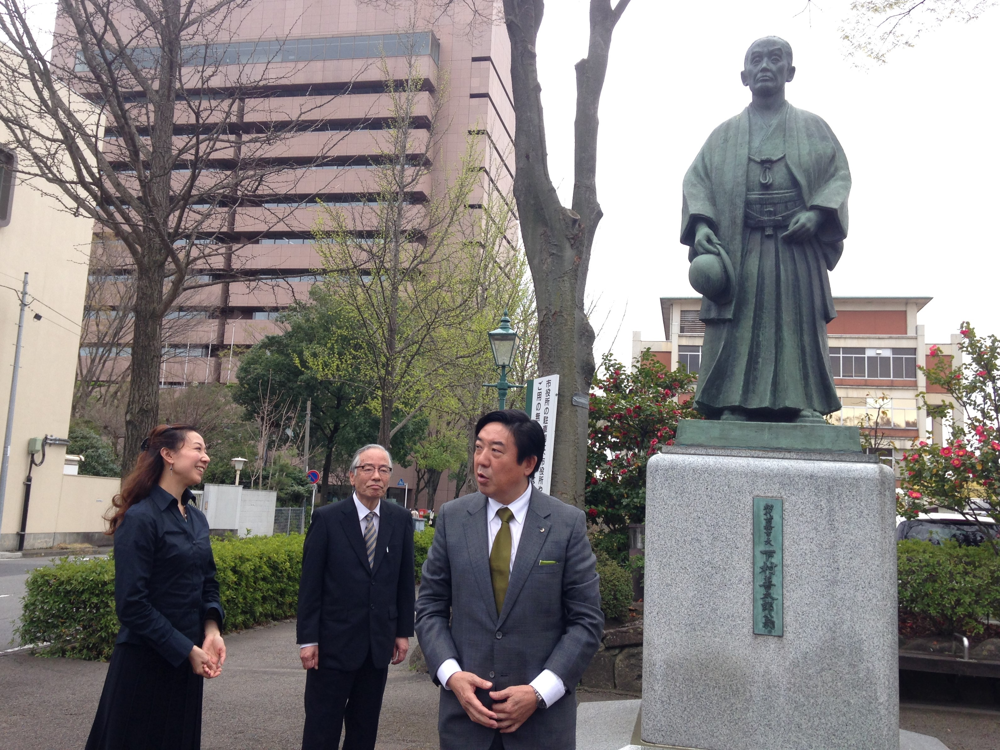


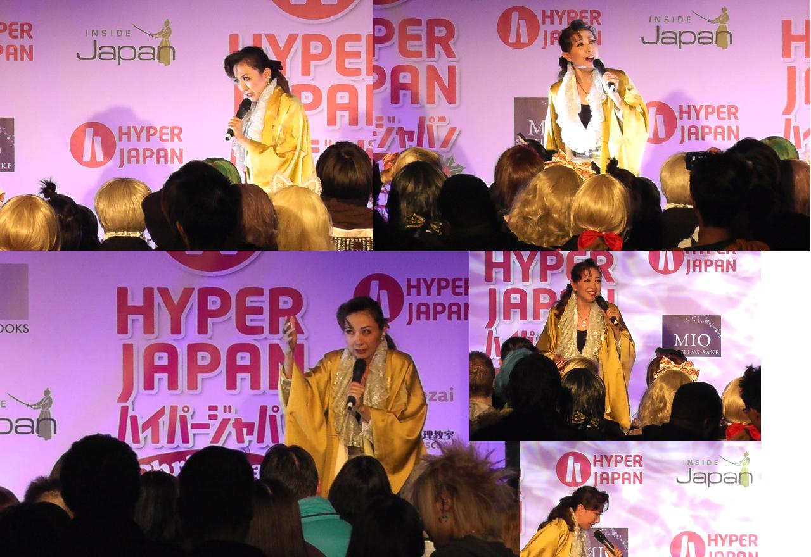


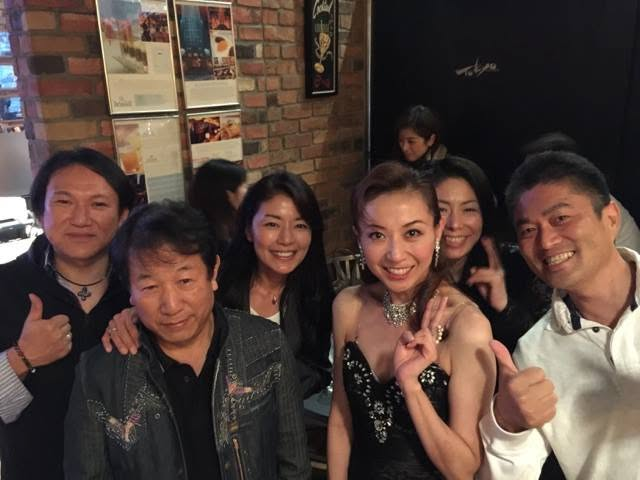

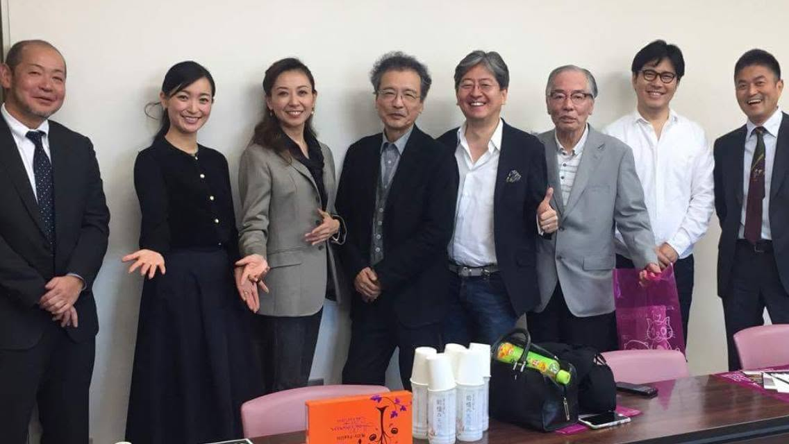
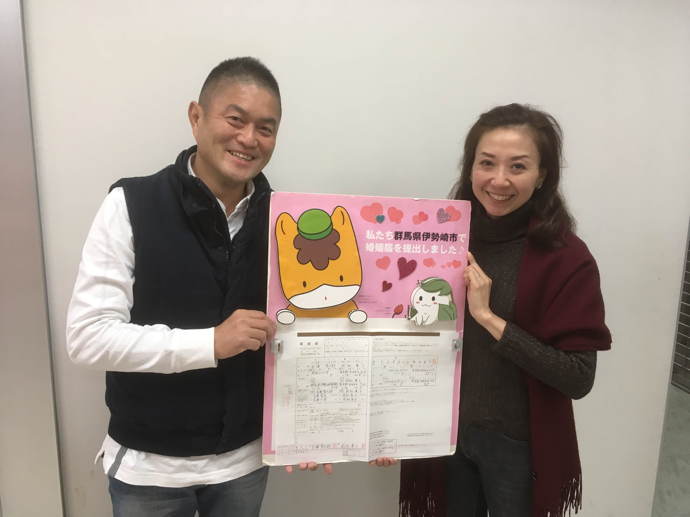

.JPEG)
.JPEG)
.JPEG)
.jpg)
.jpg)
.jpg)
.JPEG)
.JPEG)
.JPEG)
.JPEG)
.JPEG)
.JPEG)
.JPEG)
.JPEG)